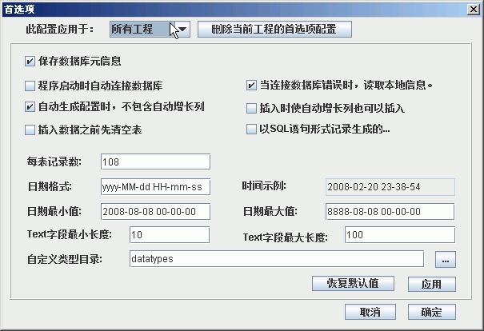

- 点击菜单 窗口->首选项(或工具栏按钮),出现如下对话框:

- 各选项意义如下：
- 所有工程，配置属于全局性的，对所以工程有效。
- 当前工程，配置只属于当前工程，只对当前工程效。
- 如果当前工程已有首选项配置，想应用全局配置，请点击 删除当前工程的首选项配置，再应用
- 保存数据库元信息,选中该项，可以保证断开连接后TDS系统仍可以工作。
- 程序启动时自动连接数据库, 选中该项目，在TDS系统启动时会根据加载最后一次编辑的工程，并自动连接数据库。
- 当连接数据库出错时,读取本地信息。只有当保存数据库元信息选中时，该选项才有意义。
- 自动生成配置时，不包含自动增长列。
- 插入时使自动增长列也可以插入。
- 插入数据库之前先清空表，选中该项，在自动生成配置时，会自动添加清空表的相关语句。
- 以SQL语句形式记录生成的数据，选中该项，生成数据后，还会将数据以insert语句形式记录在文本文件中。